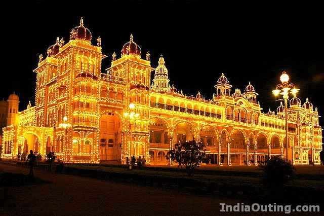
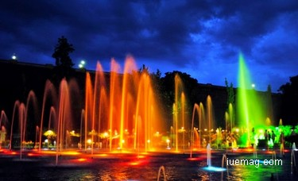

Features |
AboutMysuru |
|---|---|
| Places | 
Known as the 'Sandalwood City of India', the city of Mysore presents a host of spectacular tourists attractions that can be visited by the tourists during their vacation in the old city of the state of Karnataka.Once the administrative capital of the Wodeyar dynasty,the city of Mysore still retains the old world charm in the shadowed alleys and thoroughfares.The temples, magnificent palaces and luxuriant gardens are the chief Mysore tourist attractions that are frequently visited by the tourists. |
| Temples |  |
| Palace | |
| Zoo | |
| Brindavan Garden | |
| Museum | |
| Lakes | |
| Hotels |